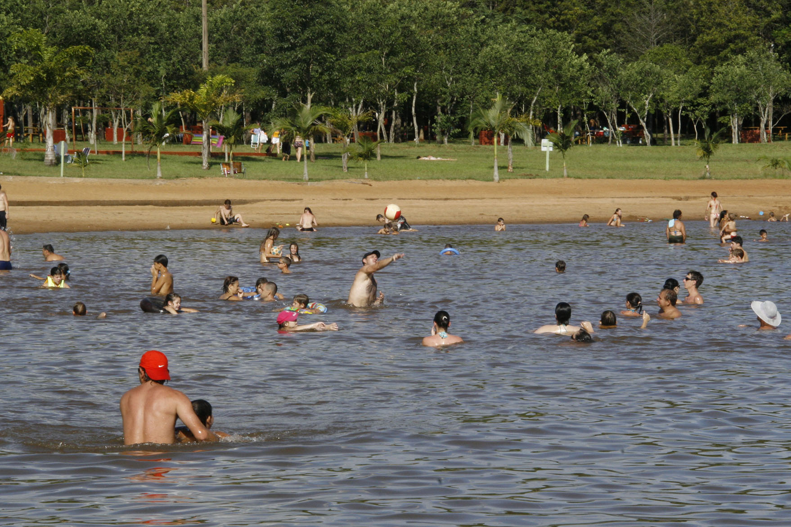
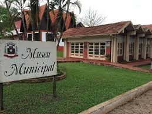

História
Missal foi fundada em 30 de dezembro de 1981 e possui uma rica história ligada à colonização e agricultura. Fundada pelo Padre José Backes, foi a grande responsável pela venda dos lotes e formação da cidade. Na época, somente famílias que pertenciam à religião Católica poderiam se instalar em Missal, uma das principais fontes de renda da epoca era a extração de madeira

Turismo
Conheça os principais pontos turísticos de Missal, como Deutsches Fest, e Lago Municipal. Deutsches Fest: Durante o ano, milhares de pessoas procuram Missal por conta da Deutsches Fest, festa tradicional que acontece no município sempre um fim de semana após a Páscoa. Regado a muito chope, sem deixar de lado as tradições, a cultura e a gastronomia típica germânica. Lago Municipal: O local conta com um caminhódromo no entorno, Academia da Saúde e academia ao ar livre, banheiros e vestiários, quadra sintética para a prática esportiva e espaço para descansar ou contemplar a natureza. Todos os anos, a prefeitura promove a queima de fogos do Réveillon no Lago Municipal, atraindo milhares de pessoas de toda a região.
Cultura
A cidade é conhecida por suas festas e tradições culturais que atraem visitantes de toda a região. Além de festas temos principalmente as comidas tipicas da região
